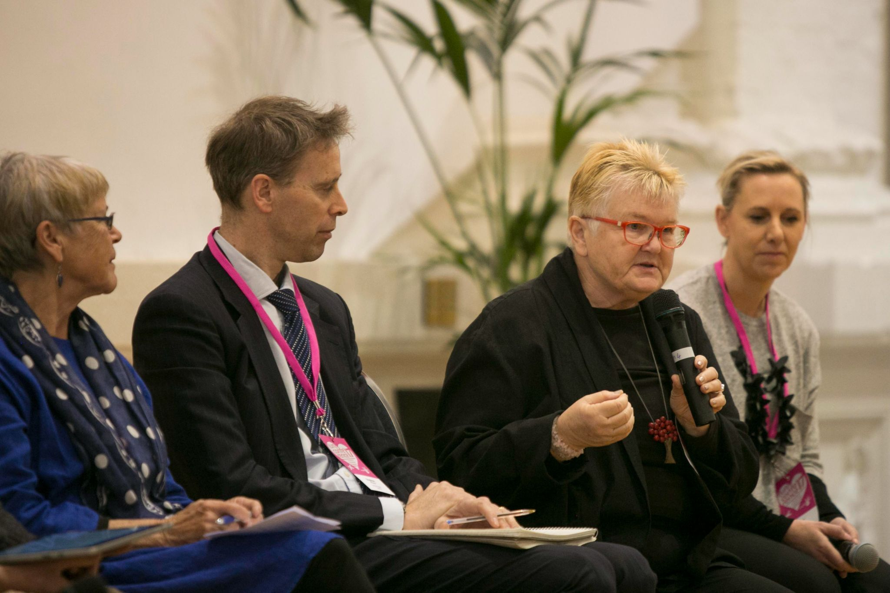

Community · Leadership
The Organisations That Will Thrive Are the Ones That Learn to Listen
In a world of noise and speed, the organisations building deep community relationships are the ones creating durable advantage — and it starts with one skill most leaders never learned.
Read Essay →